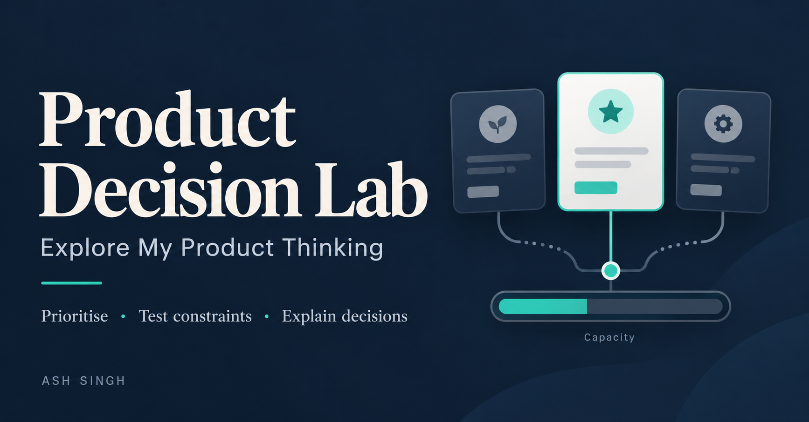

01 / WORKING PROTOTYPE
Product Decision Lab
How do you decide what deserves to be built when requests compete for limited capacity?
Compare feature requests, inspect evidence, challenge assumptions and see how capacity changes your roadmap choices.
- My contribution
- Problem framing, interaction design and AI-assisted prototyping
- Built to explore
- Evidence, capacity constraints and roadmap trade-offs
Read the thinking +
I wanted to make the reasoning behind a roadmap choice visible: the evidence, assumptions and constraints, alongside the final ranking.
The prototype uses a transparent scoring model and fictional data. Built with AI assistance; the decision challenger is rule-based, with no live AI.
Next, I want to learn whether it helps PMs identify missing evidence and explain their trade-offs more clearly.